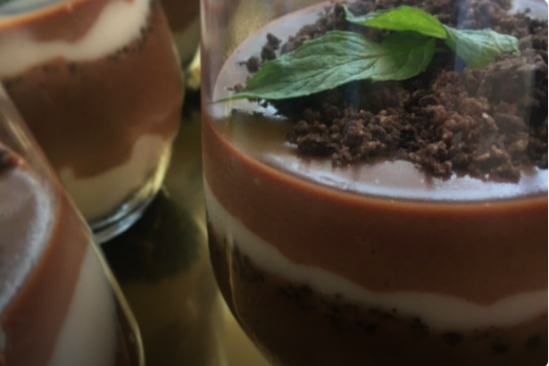

Enfes Tadıyla: Çikolatalı Kup Tarifi
Hafifliği ve yoğun çikolata tadıyla mest olacağınız pratik ve leziz bir tarif
Çikolatalı kup tatlı krizleri için nefis bir çözüm olacak.
Afiyet olsun.
Çikolatalı Kup Tarifi İçin Malzemeler
- 5 bardak süt
- 1 çorba kaşığı nişasta
- 2 çorba kaşığı un
- 11 çorba kaşığı toz şeker
- 1 adet yumurta sarısı
- 1 adet vanilya
- 3 paket oreo bisküvi
- 2 paket krema
- 2 su bardağı sütlü çikolata
- 1 yemek kaşığı tereyağ